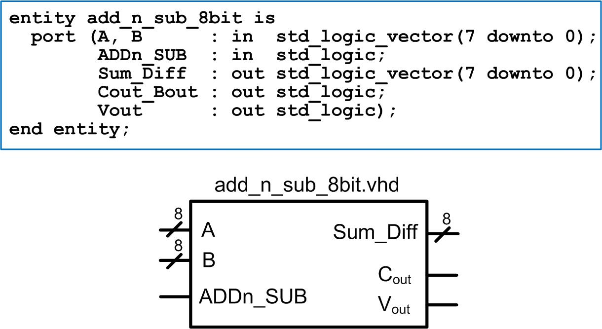

HW 12.2
____________________________________________________________________________
12.2.4
Design a VHDL model for an 8-bit, programmable adder/subtractor. The design will have an input called “ADDn_SUB” that will control whether the system behaves as an adder (0) or as a subtractor (1). The design should operate on two’s complement signed numbers. The result of the operation(s) will appear on the port called “Sum_Diff”. The model should assert the output “Cout” when an addition creates a carry or when a subtraction creates a borrow. The circuit will also assert the output "Vout" when either operation results in two’s complement overflow. The entity definition and block diagram for the system is shown in the following figure. NOTE: You can use whatever moedling approach you desire for this assignment. You can use a structural approach (i.e., full_adders + XOR gates) or a behavioral approach (i.e., a process and arithmetic operators).
You will need to create a test bench to verify your model by driving in a variety of values for A and B and checking the results. You should verify that your design operates successfully when adding and subtracting and that the Cout and Vout signals assert correctly.

Deliverables: You are going to design and simulate your adder using ModelSim. You will upload all of your design file (add_n_sub_8bit.vhd), your test bench (add_n_sub_8bit_TB.vhd), and your simulation waveform (waveform_12_2_4.jpg) to the DropBox.